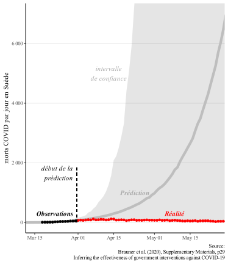
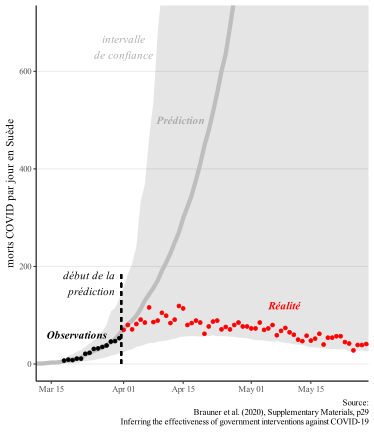
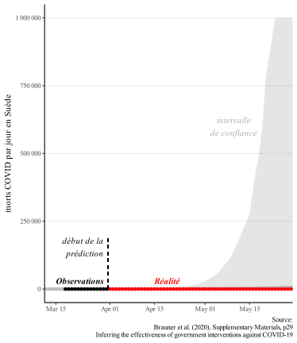
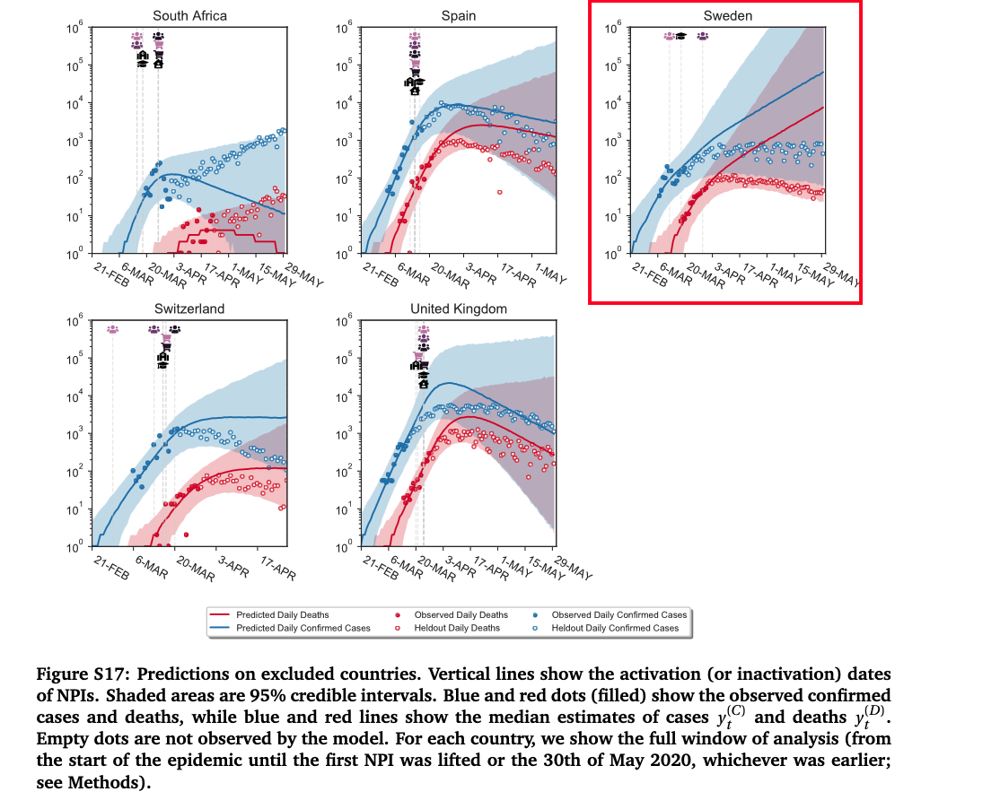

Ici, nous revenons sur quelques articles publiés dans de presitgieuses revues scientifiques, qui ont eu une influence majeure sur la perception de l’efficacité des mesures sanitaires.
Nous nous concentrons sur leurs prédictions relatives à la Suède. En effet, les mesures souples prises par les autorités permettent de voir si les modèlisations anticipent bien ce qu’il se passe en l’absence de mesures fortes. Se concentrer uniquement sur les résultats des modèles dans les pays où il y a eu des confinements n’apprend pas grand-chose. Voici un analogie pour bien comprendre.
Un scientifique vient vous voir en vous disant qu’il a un superbe modèle mathématique pour décrire la chute des personnes: son modèle est formel, si vous sautez d’une table, il vous faut absolument un parachute, sans quoi vous mourrez écrasé au sol. Vous enfilez donc le parachute, sautez d’une hauteur vertigineuse d’1 mètre, et êtes sain et sauf. “Voilà la preuve que mon modèle est bon !”.
Bien entendu, cela n’a aucun sens. Si vous aviez sauté sans parachute, vous vous en seriez également très bien sorti, ce qui invalide le modèle. Remplacez parachute par confinement, et vous voyez la nécessité de s’intéresser à la Suède pour voir la pertinence des modèles.
Pour pousser la métaphore, certains répliquent que la Suède n’a pas “rien fait” en terme de mesures sanitaires. Evidemment ! Mais il y a un monde entre l’assignation à résidence de l’ensemble de la population avec interdiction de se promener même sur un plage vide, des mesures légères, et “ne rien faire”. Tout comme il y a un monde entre sauter à pieds joints de la table, sauter la tête la première les mains dans le dos, ou sauter avec un parachute. D’ailleurs les modèles ci-dessous tentent de prendre en compte les mesures légères prises par le pays, et obtiennent tout de même des résultats aberrants.
Brauner 2020, Science
Présentation
Nous analysons ici le papier de Brauner et al. (2020), Inferring the effectiveness of government interventions against COVID-19 publié dans la prestigieux journal Science, et plus particulièrement les résultats présentés dans les données supplémentaires, p29.
L’article a été publié en décembre 2020, et a été depuis cité près de 1000 fois. Son preprint a lui été publié dès fin mai 2020, à la fin du premier confinement.
Résultats en Suède
Prédiction vs Réalité
La “prédiction” (terme utilisé par les auteurs, cf onglet Figure originale) propose une croissance ininterrompue du nombre de morts quotidiens, atteignant plus de 6 000 morts par jour fin mai, et un total cumulé de plus de 100 000 décès. En réalité, le nombre de décès quotidien sera d’environ 100 par jour au pic épidémique, pour un cumul de 4 500 décès fin mai (cohéren avec les données reportées sur ourworldindata).
Dans l’onglet Zoom x10, nous zoomons pour mieux voir la divergence entre la prédiction et la réalité.

Zoom x10
Ici nous présentons la même figure qu’à l’onglet Prédiction vs Réalité, mais en zoomé x10. Cela permet de voir que la prédiction diverge complètement de la réalité stagnante après à peine 1 semaine.
Le zoom permet de voir que la réalité correspond au bas de l’intervalle de confiance. On pourrait se dire que c’est la preuve que le modèle ne s’est pas trompé. Ce serait une interprétation très généreuse, car le haut de l’intervalle de confiance, qui sort ici du cadre, correspond à l’anéantissement de l’ensemble de la population Suédoise (cf onglet Zoom out).
Un intervalle de confiance allant d’une épidémie faible à l’anéantissement de la population n’apporte aucune information exploitable, d’où notre choix de nous concentrer sur l’estimation centrale du modèle.

Zoom out
Ici on voit que le haut de l’intervalle de confiance culmine à 1 million de morts par jour fin mai. Dans l’onglet Figure originale, on voit que cette borne haute sort du cadre du graphique à partir du 23 mai. A cette date, plus de 6 millions de Suédois seraient morts, soit plus de la moitié du pays de 10 millions d’habitants.
Cela pose de sérieuses question quant au lien du modèle avec le monde réel, ainsi qu’à l’utilité de la prédiction, si l’intervalle de confiance peut couvrir une réalité aussi disparate.

Figure originale
Voici la figure originale issue de l’article. L’axe verticale en échelle logarithmique, ce qui peut donner l’impression que la courbe de prédiction et la réalité sont proches. Dans nos graphes nous avons remis l’axe vertical en échelle linéaire.
On voit sur le graphique les mesures prises en compte par les modélisateurs : interdiction des grands rassemblements de 1 000 puis 100 personnes, puis fermeture de certaines écoles et universités.

Walker 2020, Science
Plus de détails sur l’étude à venir, mais le résultat peut être vu sur notre page principale, en 1. Mars 2020, les modélisations qui ont conduit le monde à se confiner.